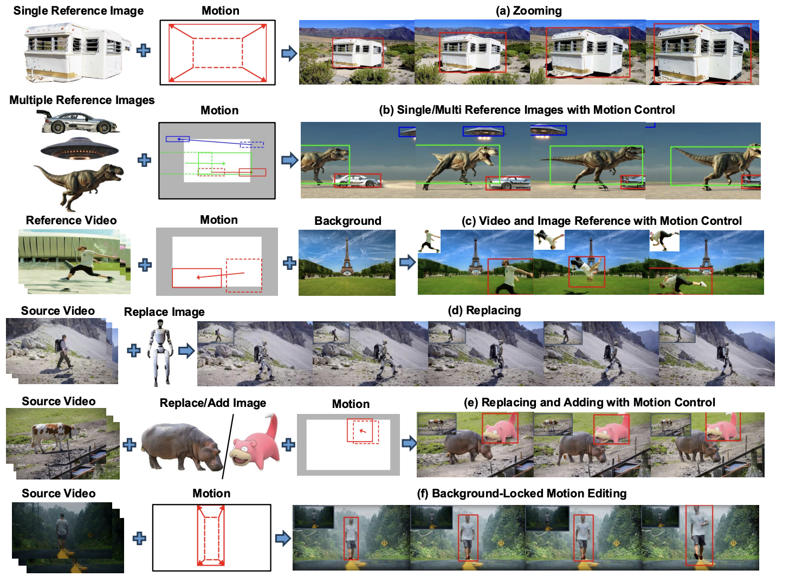
Haotian Yang | 杨皓天
I'm a Research Scientist at ByteDance/TikTok working on video generation. Previously, I was a Research Engineer at Kuaishou Technology, where I worked on both video generation as a core contributor to the Kling video generation model and 3D avatars, leading the development of a Light Stage system.
I received the M.S. degree under the supervision of Xun Cao and Hao Zhu, and B.S. degree from Nanjing University, in 2021 and 2018 respectively.
My research interests lie in computer vision and computer graphics, including video generation and editing, human digitization, and 3D vision.
News
- HECTOR is accepted to ICML 2026.
- VIVA and TGT are accepted to CVPR 2026.
- VMoBA is accepted to ICLR 2026.
- A paper is accepted to TPAMI.
- IMBA is accepted to ICCV 2025.
- Koala-36m is accepted to CVPR 2025.
- Videotetris is accepted to NeurIPS 2024.
- Our Sora-like video generation tool, Kling, is available online.
- VRMM is accepted to SIGGRAPH 2024.
- TRAvatar is accepted to SIGGRAPH Asia 2023.
Publications
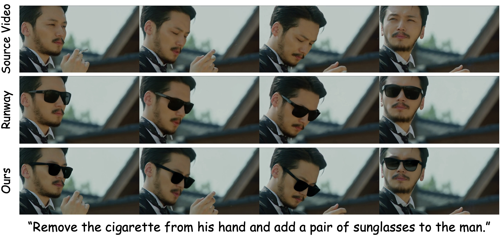
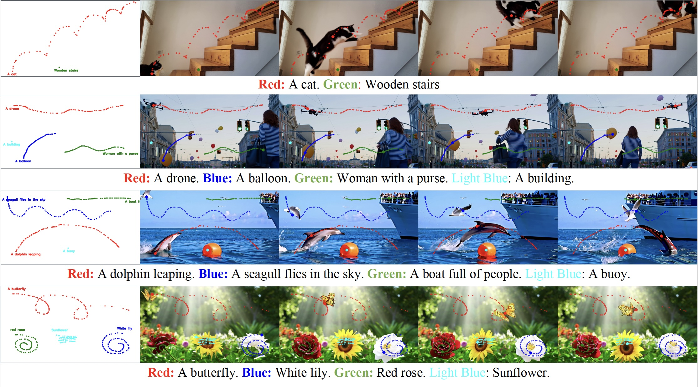
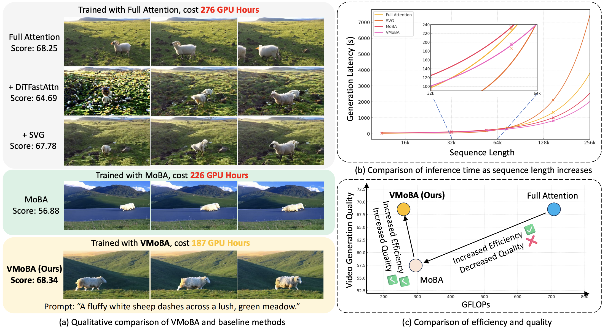
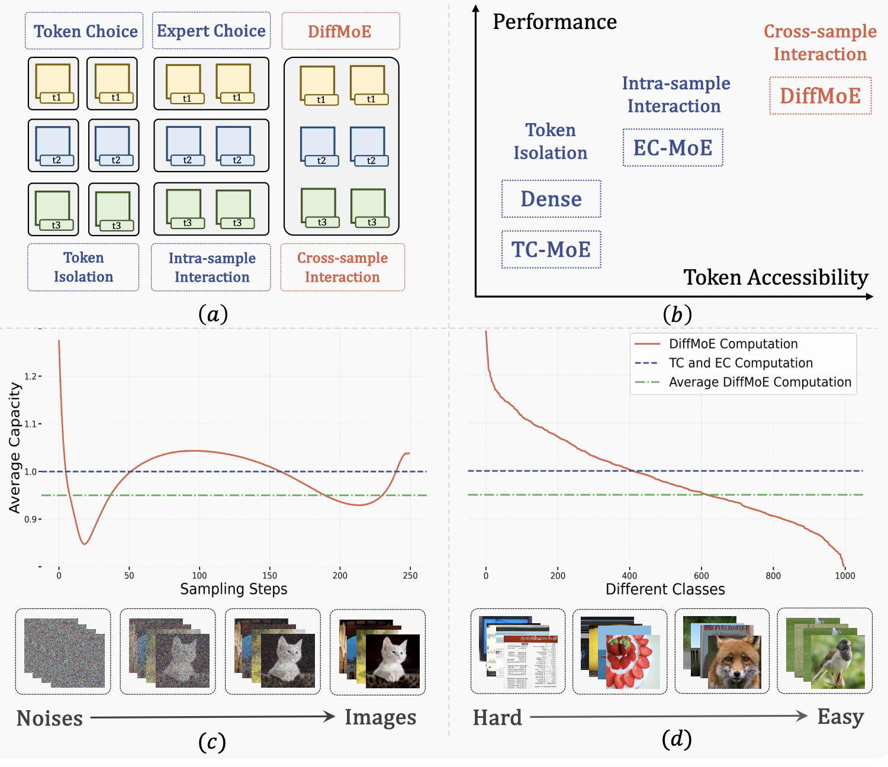
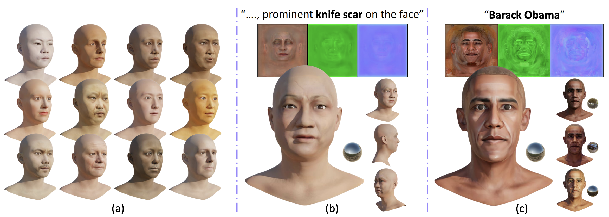
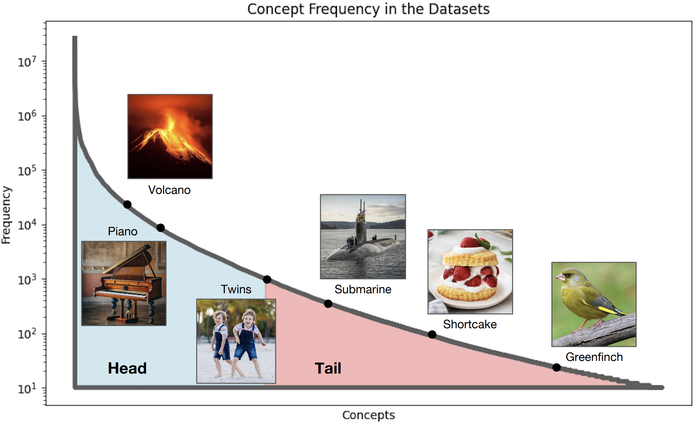
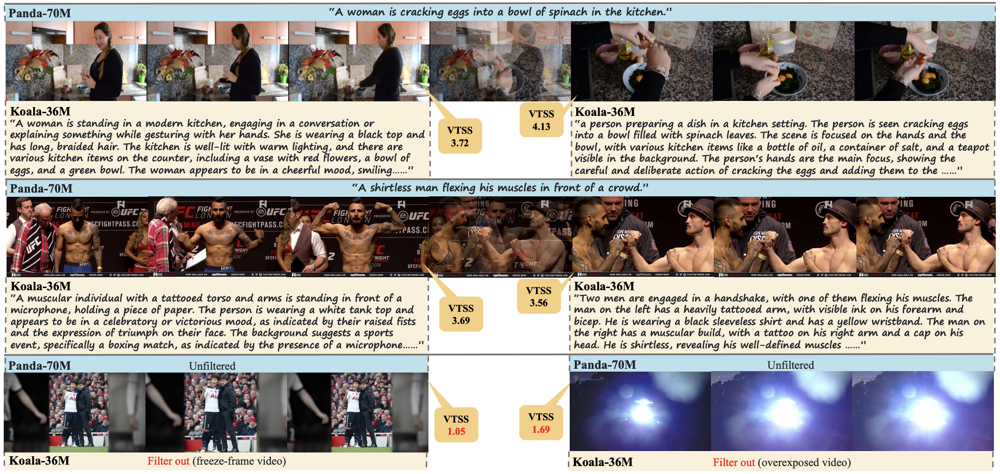
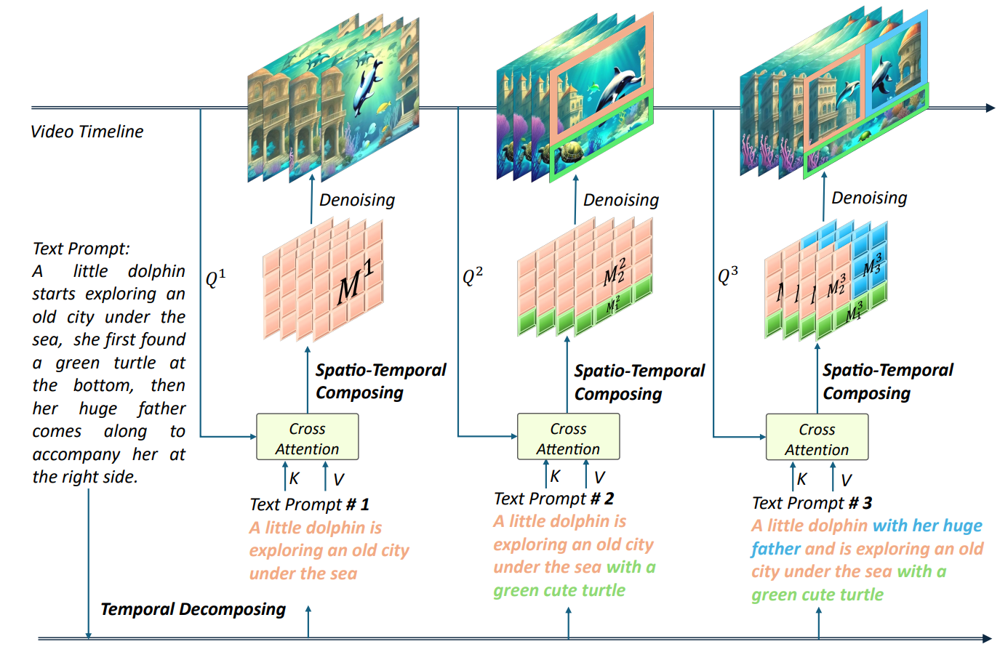
VideoTetris: Towards Compositional Text-To-Video Generation
NeurIPS 2024
Arxiv /
Project Page /
Code /
Bibtex
@article{tian2024videotetris,
title={VideoTetris: Towards Compositional Text-to-Video Generation},
author={Tian, Ye and Yang, Ling and Yang, Haotian and Gao, Yuan and Deng, Yufan and Chen, Jingmin and Wang, Xintao and Yu, Zhaochen and Tao, Xin and Wan, Pengfei and Zhang, Di and Cui, Bin},
journal={arXiv preprint arXiv:2406.04277},
year={2024}
}
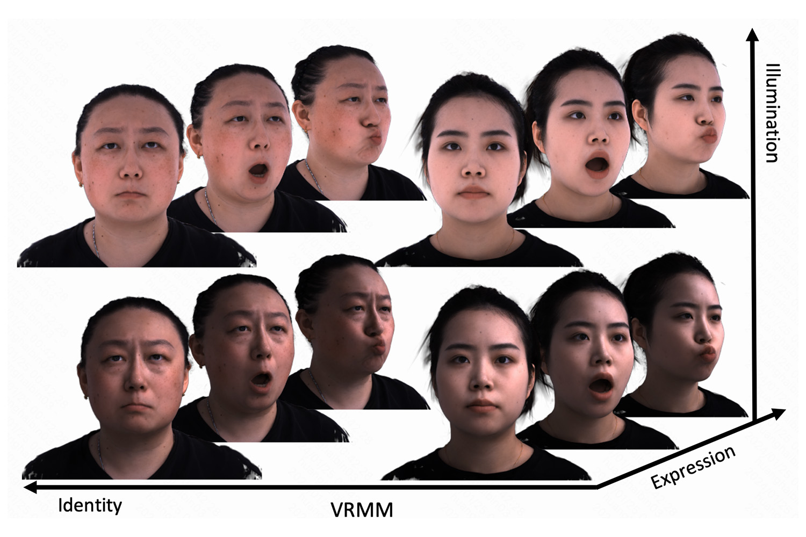
VRMM: A Volumetric Relightable Morphable Head Model
SIGGRAPH 2024 (Conference)
Arxiv /
Project Page /
Bibtex
@inproceedings{yang2024vrmm,
title={VRMM: A Volumetric Relightable Morphable Head Model},
author={Haotian, Yang and Mingwu, Zheng and ChongYang, Ma and Yu-Kun, Lai and Pengfei, Wan and Haibin, Huang},
booktitle={SIGGRAPH 2024 Conference Proceedings},
year={2024}
}
Towards Practical Capture of High-Fidelity Relightable Avatars
SIGGRAPH Asia 2023 (Conference)
Arxiv /
Project Page /
Bibtex
@inproceedings{yang2023towards,
title={Towards Practical Capture of High-Fidelity Relightable Avatars},
author={Yang, Haotian and Zheng, Mingwu and Feng, Wanquan and Huang, Haibin and Lai, Yu-Kun and Wan, Pengfei and Wang, Zhongyuan and Ma, Chongyang},
booktitle={SIGGRAPH Asia 2023 Conference Proceedings},
year={2023}
}
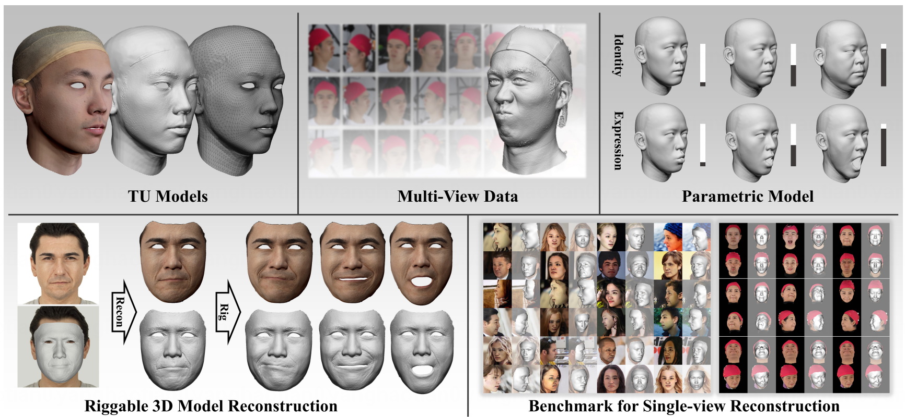
Facescape: 3d facial dataset and benchmark for single-view 3d face reconstruction
TPAMI 2023
Arxiv /
Code /
Bibtex
@article{zhu2023facescape,
title={Facescape: 3d facial dataset and benchmark for single-view 3d face reconstruction},
author={Zhu, Hao and Yang, Haotian and Guo, Longwei and Zhang, Yidi and Wang, Yanru and Huang, Mingkai and Wu, Menghua and Shen, Qiu and Yang, Ruigang and Cao, Xun},
journal={IEEE transactions on pattern analysis and machine intelligence},
year={2023},
publisher={IEEE}
}
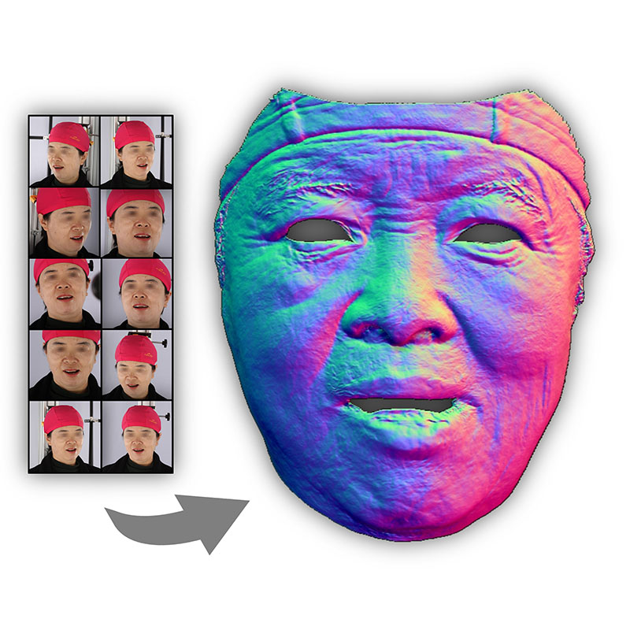
Detailed facial geometry recovery from multi-view images by learning an implicit function
AAAI 2022 Oral
Arxiv /
Code /
Bibtex
@InProceedings{xiao2022detailed,
author={Xiao, Yunze and Zhu, Hao and Yang, Haotian and Diao, Zhengyu and Lu, Xiangju and Cao, Xun},
title={Detailed Facial Geometry Recovery from Multi-View Images by Learning an Implicit Function},
booktitle={Proceedings of the AAAI Conference on Artificial Intelligence},
year={2022}
}
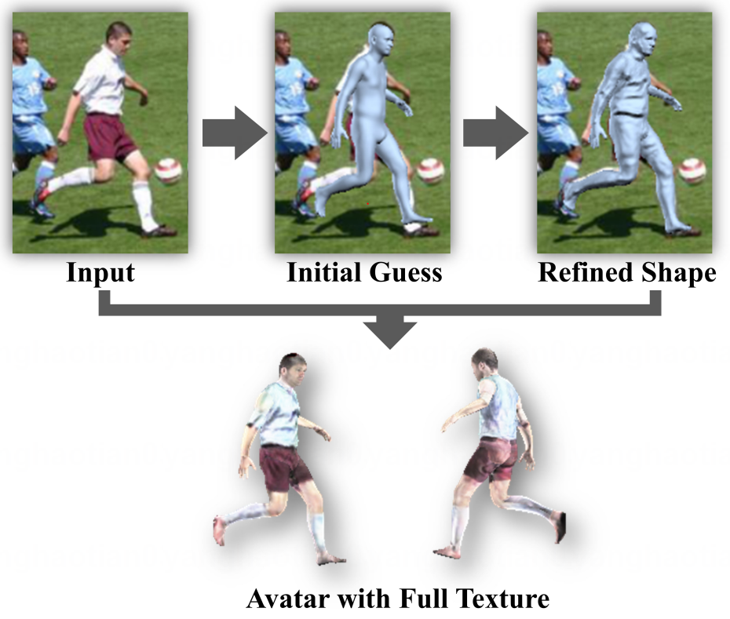
Detailed avatar recovery from single image
TPAMI 2021
Arxiv /
Code /
Bibtex
@article{zhu2021detailed,
title={Detailed avatar recovery from single image},
author={Zhu, Hao and Zuo, Xinxin and Yang, Haotian and Wang, Sen and Cao, Xun and Yang, Ruigang},
journal={IEEE Transactions on Pattern Analysis and Machine Intelligence},
volume={44},
number={11},
pages={7363--7379},
year={2021},
publisher={IEEE}
}
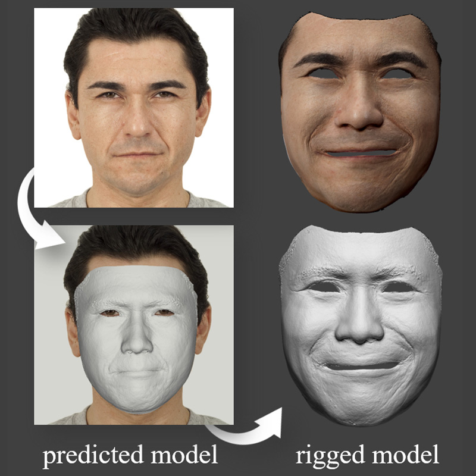
Facescape: a large-scale high quality 3d face dataset and detailed riggable 3d face prediction
CVPR 2020
Arxiv /
Code /
Bibtex
@inproceedings{yang2020facescape,
author={Yang, Haotian and Zhu, Hao and Wang, Yanru and Huang, Mingkai and Shen, Qiu and Yang, Ruigang and Xun Cao},
title={FaceScape: A Large-Scale High Quality 3D Face Dataset and Detailed Riggable 3D Face Prediction},
booktitle={IEEE/CVF Conference on Computer Vision and Pattern Recognition (CVPR)},
month={June},
year={2020},
page={601--610}
}
Service
Conference Reviews
NeurIPS 2026; ECCV 2026; CVPR 2025, 2026; ICLR 2025; AAAI 2025; SIGGRAPH 2024, 2025; SIGGRAPH Asia 2024
Journal Reviews
Knowledge-Based Systems; Neurocomputing; Engineering Applications of Artificial Intelligence; The Visual Computer; Computer Animation and Virtual Worlds